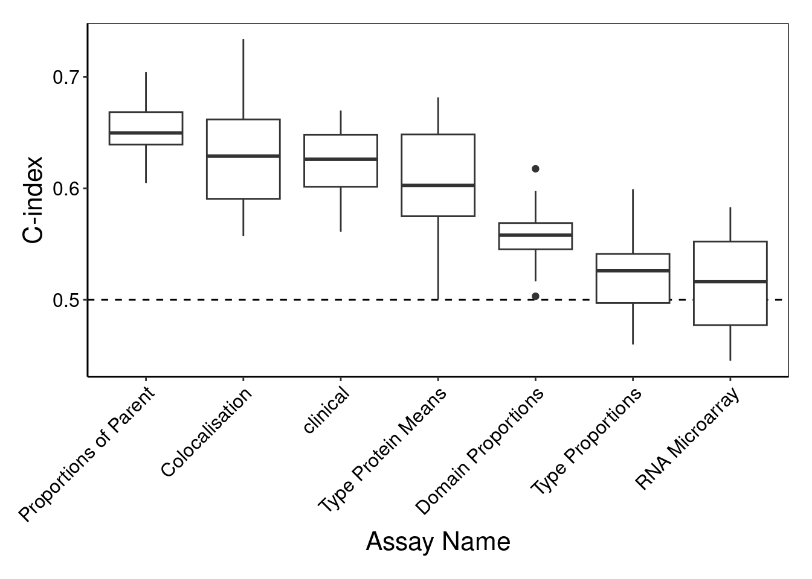
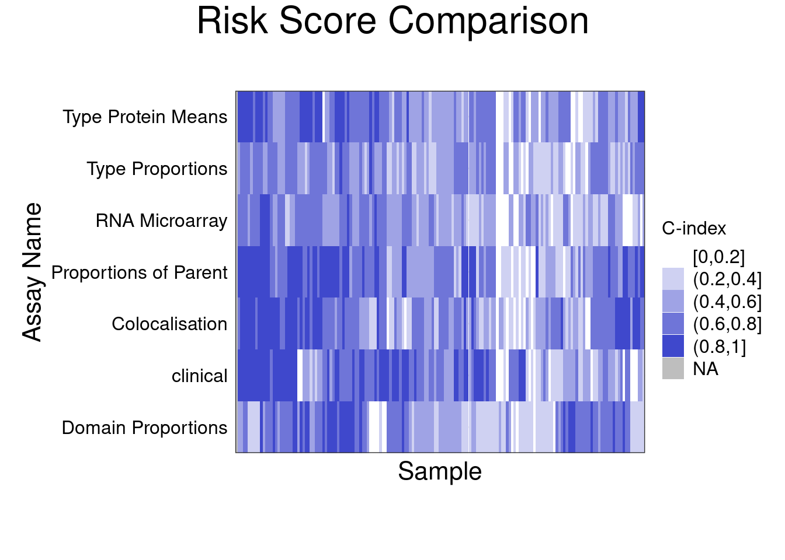

library(ClassifyR)
library(ggplot2)3 Procedure 2: Multi-view classifiability evaluation
ClassifyR implements a variety of ways to evaluate the classifiability of samples from multiple views. A view could be an omics assay or it could be a particular metafeature generation of a particular data set.
3.1 Introduction
In this case study, both different assays and different metafeatures will be demonstrated of the widely-known METABRIC breast cancer data set. These have been pre-generated. Briefly,
- Clinical: Contains the outcome of interest (recurrence-free survival) as well as covariates that could predict it, such as tumour size and grade.
- RNA abundance: This was measured by microarrays. Quantile normalisation and prove reannotation was made by cBioPortal. Top 2000 highly-variable genes are used for illustration.
- Imaging mass cytometry: Complementary to RNA, this assay gives the protein abundances for a small panel of 39 proteins. This is the basis of:
- Type Proportions: Using annotated cell types, the proportion of each cell type in each patient sample.
- Type Protein Mean: For each cell type, the average abundance of each feature in each sample.
- Type Pairs Colocated: For each pair of cell types, a score of association using their X and Y coordinates based on L curve.
- Colocated in Regions: k-means clustering-based definition of regions and spatial association within them.
- Proportions of Parent: Based on HOPACH hierarchical clustering, the proportion of a cell type to its parent type.
The subset of samples which have no detected lymph node metastasis, irrespective of stage, are used for subsequent analysis.
3.2 Setting up the environment and data objects
1. Load the R packages into the R environment
The first step is to load the data and look at a few records (2 minutes).
Timing ~ 6.5s
ClassifyR is used to perform all the demonstrated analyses below.
2. Import preprocessed datasets for analysis
Timing ~ 0.057s
METABRIC <- readRDS("data/procedure2/METABRICviews.rds")
sapply(METABRIC, dim) clinical RNA Microarray Type Proportions Type Protein Mean
[1,] 165 165 165 165
[2,] 30 2000 22 858
Type Pairs Colocated Colocated in Regions Proportion of Parent
[1,] 165 165 165
[2,] 484 10 55The number of features vary from 10 to 2000 for 165 patients. Next, look more closely at clinical data.
Timing ~ 0.055s
head(METABRIC[["clinical"]]) METABRIC.ID MATCHED.NORMAL.METABRIC.ID Cohort Age.At.Diagnosis
MB-0002 MB-0002 MB-0003 1 43.19
MB-0010 MB-0010 MB-0011 1 78.77
MB-0035 MB-0035 MB-0034 1 84.22
MB-0060 MB-0060 MB-0061 1 45.43
MB-0081 MB-0081 MB-0080 1 49.61
MB-0107 MB-0107 MB-0676 1 65.59
Breast.Tumour.Laterality Date.Of.Diagnosis Last.Followup.Status NPI
MB-0002 r 2000/12 a 4.020
MB-0010 l 2001/03 d-d.s. 4.062
MB-0035 l 2001/04 d-d.s. 3.056
MB-0060 r 2001/07 a 4.046
MB-0081 r 2001/08 a 3.048
MB-0107 r 2001/12 a 4.036
ER.Status Inferred.Menopausal.State Lymph.Nodes.Positive
MB-0002 pos pre 0
MB-0010 pos post 0
MB-0035 neg post 0
MB-0060 pos pre 0
MB-0081 pos pre 0
MB-0107 pos post 0
Breast.Surgery CT HT RT Grade Size Histological.Type Stage
MB-0002 BREAST CONSERVING NO/NA TAM CW 3 10 IDC 1
MB-0010 MASTECTOMY NO/NA TAM CW 3 31 IDC 4
MB-0035 MASTECTOMY NO/NA NO/NA NO/NA 2 28 ILC 2
MB-0060 BREAST CONSERVING AC TAM CW 3 23 IDC 2
MB-0081 BREAST CONSERVING NO/NA GNRHA CW 2 24 IDC 2
MB-0107 MASTECTOMY NO/NA TAM NO/NA 3 18 IDC 2
DeathBreast Death T TLR LR TDR DR Complete.Rec.History metabricId
MB-0002 0 0 2539 2539 0 2539 0 YES MB-0002
MB-0010 1 1 234 234 0 88 1 YES MB-0010
MB-0035 1 1 1088 1088 0 1088 0 YES MB-0035
MB-0060 0 0 4226 4226 0 4226 0 YES MB-0060
MB-0081 0 0 2085 2085 0 2085 0 YES MB-0081
MB-0107 0 0 4741 4741 0 4741 0 YES MB-0107
timeRFS eventRFS
MB-0002 2539 0
MB-0010 88 1
MB-0035 1088 1
MB-0060 4226 0
MB-0081 2085 0
MB-0107 4741 0table(METABRIC[["clinical"]][, "Lymph.Nodes.Positive"])
0
165 usefulFeatures <- c("Breast.Tumour.Laterality", "ER.Status", "Inferred.Menopausal.State",
"Grade", "Size", "Stage")timeRFS and eventRFS columns will form the outcomes to predict.
Clinical data often has arbitrary sample identifiers, dates and other non-biological information which should not be used in model building. Define a set of useful features for further use.
3.3 Model Building and Evaluation
Examine whether any view alone is the best predictor or whether combinations of views add value to accuracy. Note that any parameters to the prepare element of extraParams will be passed to the prepareData function.
3. Individual Assays
Timing ~ 120s
The first analysis fits a penalised Cox proportional hazards model to each assay alone. Remember that the default scheme of crossValidate is 5-fold cross-validation repeated 20 times.
set.seed(2024)
coxPredicts <- crossValidate(METABRIC, c("timeRFS", "eventRFS"),
selectionMethod = "CoxPH", classifier = "CoxNet", nCores = 20,
extraParams = list(prepare = list(useFeatures = list(clinical = usefulFeatures))))
orderViews <- c("clinical", "RNA Microarray", "Type Proportions",
"Proportion of Parent", "Colocated in Regions", "Type Protein Mean", "Type Pairs Colocated")
performancePlot(coxPredicts, orderingList = list(`Assay Name` = orderViews)) +
theme(axis.text.x = element_text(angle = 45, vjust = 1, hjust = 1))
forMerge <- c("clinical", "RNA Microarray", "Type Proportions", "Type Pairs Colocated")The most accurate view is Proportion of Parent but using only the freely available clinical data is qualitatively the same as omics. It is also interesting to observe that protein assay has better predicted performance although it has about a hundred times less features to use than RNA does.
Timing ~ 26s
perSampleC <- samplesMetricMap(coxPredicts[c(1:3, 7)], showXtickLabels = FALSE)Warning in .local(results, ...): Sample C-index not found in all elements of
results. Calculating it now.
It is also worthwhile looking at per-sample C-index, which is simply the number of concordant pairs divided by the total number of feasible pairs of sample comparisons between the predicted risk score and the event-time recorded outcome.
4. Individual Assays
Timing ~ 21.2mins
Although it is possible to exhaustively combine all possible subsets of the seven views, the large number of box plots becomes difficult to interpret. Hence, clinical, RNA and two imaging mass cytometry views Proportion of Parent (best individual view) and Type Proportions (worst individual view) will be included.
Firstly, "merge" combination mode is used, which simply concatenates the features independently chosen for each view. (8 minutes)
coxMergePredicts <- crossValidate(METABRIC[forMerge], c("timeRFS", "eventRFS"), multiViewMethod = "merge",
extraParams = list(prepare = list(useFeatures = list(clinical = usefulFeatures))),
selectionMethod = "CoxPH", classifier = "CoxNet", nCores = 20)
performancePlot(coxMergePredicts, orderingList = list("Assay Name" = "performanceDescending"))
Combining clinical data with an imaging mass cytometry view has the best overall performance and slightly better than either view alone.
An alternative to simply concatenating features is to do prevalidation. Training and prediction is applied to each non-clinical view and the preiction is added as a column to the clinical data. Hence, each high-dimensional omics view become a single feature in the clinical data table. If omics views are indeed important they should out-compete clinical variables during feature selection.
To perform prevalidation, specify multiViewMethod = "prevalidation" (17 minutes)
Timing ~ 46.6mins
coxPrevalPredicts <- crossValidate(METABRIC[forMerge], c("timeRFS", "eventRFS"),
extraParams = list(prepare = list(useFeatures = list(clinical = usefulFeatures))),
multiViewMethod = "prevalidation", nRepeats = 20,
selectionMethod = "CoxPH", classifier = "CoxNet", nCores = 20)
performancePlot(coxPrevalPredicts)
Examine the features selected for when RNA data augmented the clinical data.
Timing ~ 0.03s
coxPrevalPredicts[[2]]An object of class 'ClassifyResult'.
Characteristics:
characteristic value
Assay Name clinical, RNA Microarray
Classifier Name CoxNet, CoxNet
Selection Name CoxPH, CoxPH
multiViewMethod prevalidation
characteristicsLabel none
Cross-validation 20 Permutations, 5 Folds
Features: List of length 39 of feature identifiers.
Predictions: A data frame of 1280 rows.
Performance Measures: None calculated yet.distribution(coxPrevalPredicts[[2]], plot = FALSE)allFeaturesText
Grade Breast.Tumour.Laterality Inferred.Menopausal.State
1.00 0.87 0.87
Stage ER.Status Size
0.87 0.85 0.82 The omics views did not outcompete the clinical variables in this scenario.
3.4 Summary
Patient survival of them METRABRIC dataset was examined in a variety of ways. Given the cost and expertise required for generating omics data, the value of omics data over and above easily obtainable clinical data was not identified.